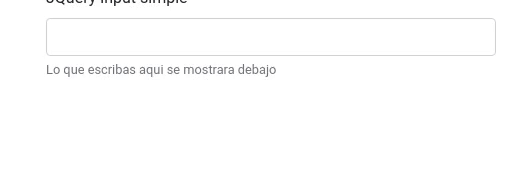

Proyecto que pretende ayudar a los programadores de jQuery a entender y aplicar Vuejs.
Se presentan diferentes soluciones de complejidad ascendente y a medida que se avanza se muestra como realizarlo en jQuery y en Vuejs. Hay articulo por cada proyecto.

Tema: Reactividad de la forma mas sencilla.
Vuejs:
Uso de {{}}
v-model.
Instancia vue.
Significado de "el".
¿Por qué id="app"?.
Los datos en la instancia de Vuejs (data).
JS:
(Codigo jQuery)[Input/simple/jQueryInputSimple.html] (Codigo Vuejs)[Input/simple/VuejsInputSimple.html] (Articulo)[https://comunidad.programaresunamierda.com/2020/06/vuejs-para-programadores-jquery-form.html]